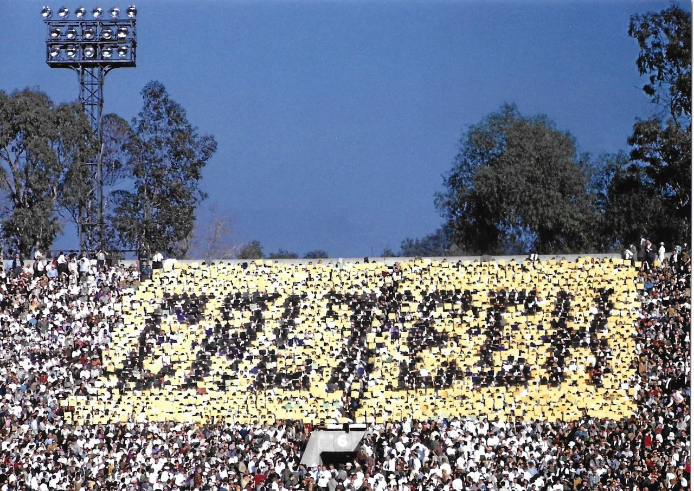

С подключением %юзернейм%
HHHHHHHHH HHHHHHHHH AAA CCCCCCCCCCCCCKKKKKKKKK KKKKKKKIIIIIIIIIINNNNNNNN NNNNNNNN GGGGGGGGGGGGG
H:::::::H H:::::::H A:::A CCC::::::::::::CK:::::::K K:::::KI::::::::IN:::::::N N::::::N GGG::::::::::::G
H:::::::H H:::::::H A:::::A CC:::::::::::::::CK:::::::K K:::::KI::::::::IN::::::::N N::::::N GG:::::::::::::::G
HH::::::H H::::::HH A:::::::A C:::::CCCCCCCC::::CK:::::::K K::::::KII::::::IIN:::::::::N N::::::N G:::::GGGGGGGG::::G
H:::::H H:::::H A:::::::::A C:::::C CCCCCCKK::::::K K:::::KKK I::::I N::::::::::N N::::::N G:::::G GGGGGG
H:::::H H:::::H A:::::A:::::A C:::::C K:::::K K:::::K I::::I N:::::::::::N N::::::NG:::::G
H::::::HHHHH::::::H A:::::A A:::::A C:::::C K::::::K:::::K I::::I N:::::::N::::N N::::::NG:::::G
H:::::::::::::::::H A:::::A A:::::A C:::::C K:::::::::::K I::::I N::::::N N::::N N::::::NG:::::G GGGGGGGGGG
H:::::::::::::::::H A:::::A A:::::A C:::::C K:::::::::::K I::::I N::::::N N::::N:::::::NG:::::G G::::::::G
H::::::HHHHH::::::H A:::::AAAAAAAAA:::::A C:::::C K::::::K:::::K I::::I N::::::N N:::::::::::NG:::::G GGGGG::::G
H:::::H H:::::H A:::::::::::::::::::::AC:::::C K:::::K K:::::K I::::I N::::::N N::::::::::NG:::::G G::::G
H:::::H H:::::H A:::::AAAAAAAAAAAAA:::::AC:::::C CCCCCCKK::::::K K:::::KKK I::::I N::::::N N:::::::::N G:::::G G::::G
HH::::::H H::::::HH A:::::A A:::::AC:::::CCCCCCCC::::CK:::::::K K::::::KII::::::IIN::::::N N::::::::N G:::::GGGGGGGG::::G
H:::::::H H:::::::H A:::::A A:::::ACC:::::::::::::::CK:::::::K K:::::KI::::::::IN::::::N N:::::::N GG:::::::::::::::G
H:::::::H H:::::::H A:::::A A:::::A CCC::::::::::::CK:::::::K K:::::KI::::::::IN::::::N N::::::N GGG::::::GGG:::G
HHHHHHHHH HHHHHHHHHAAAAAAA AAAAAAA CCCCCCCCCCCCCKKKKKKKKK KKKKKKKIIIIIIIIIINNNNNNNN NNNNNNN GGGGGG GGGG
Хакинг
несанкционированным доступом к компьютерным системам и данным

Касты хакеров
blackhat
хакеры, которые незаконно проникают в системы с целью нанесения ущерба
whitehat
профессиональные хакеры, работающие на благо, с целью защиты и повышения безопасности систем
greyhat
могут взламывать системы без разрешения, но часто с целью показать уязвимость и предложить её устранение
Script Kiddies
неопытные хакеры, которые используют чужие заранее написанные скрипты без глубокого понимания
Касты хакеров
Hacktivists
взламывают системы для продвижения политических, социальных или идеологических целей
Bluehat
корпорации нанимают для проведения атак на свои системы с целью проверки их безопасности перед выходом на рынок
Green Hat
Новички
Red Hat
борются с черными шляпами, но делают это более агрессивными методами
Касты хакеров
Nation-State Hackers
хакеры, работающие от лица правительств для проведения кибершпионажа, кибервойны или политического саботажа
Информационная безопасность
Инфбез / infosec
совокупность мер, направленных на защиту данных и систем от несанкционированного доступа, изменений или уничтожения
Конфиденциальность
обеспечение доступа к данным только для тех, кто имеет на это право
Целостность
защита данных от несанкционированного изменения
Доступность
обеспечение возможности легального доступа к данным для авторизованных пользователей
Элементы защиты
Технические средства
- файрволы
- антивирусы
Организационные меры
- политики безопасности
- контроль доступа
Человеческий фактор
- обучение персонала
- сознательность пользователей
Pentest
процесс тестирования систем, сетей или приложений на наличие уязвимостей, которые могут быть использованы злоумышленниками для получения несанкционированного доступа
$ hack pentagon --fast
Pentester
специалист по безопасности, который занимается пентестингом, то есть тестирует системы и приложения на наличие уязвимостей

Виды пентеста
Развитие технологий
Развитие технологий
zero day hack (1961)
Рост интереса во взломе систем
Первые истории взломов

Исторический контекст
ARPANET
Advanced Research Projects Agency Network
прототипом современного Интернета между университетами и исследовательскими центрами